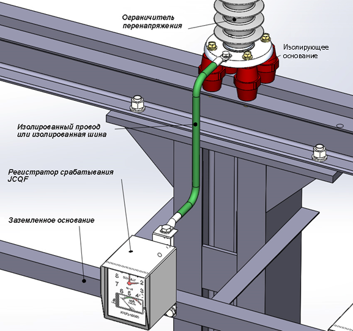
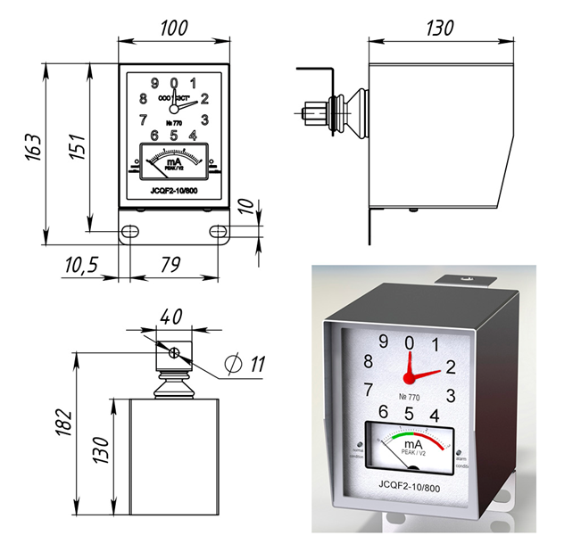

Регистратор срабатывания JCQF2
Регистратор срабатывания ограничителей перенапряжения JCQF2: индикация тока проводимости и счёт срабатываний ОПН на класс напряжения 6–330 кВ.
JCQF2
Регистратор срабатывания JCQF2 предназначен для непрерывной индикации полного тока проводимости и регистрации числа срабатываний ограничителей ОПН на класс напряжения 6-330 кВ при перенапряжениях, а также для индикации аварийного состояния ОПН в режиме их эксплуатации без разрыва токоведущей цепи.
Условия эксплуатации регистратора JCQF2:
- температура окружающей среды от -60 до +60° С;
- относительная влажность воздуха - не более 95%;
- вид климатического исполнения и категория размещения по ГОСТ 15150-69 - УХЛ1
Регистратор срабатывания состоит из индикатора тока проводимости с двухцветной шкалой, индикатора рабочего состояния (светодиод зеленого свечения) индикатора аварийного состояния (светодиод красного свечения) электромеханического счетчика срабатывания ОПН.
Регистратор срабатывания JCQF2 10/800 работает следующим образом. Каждое срабатывание ограничителя, вызванное перенапряжением, приводит к протеканию разрядного тока через регистратор. Протекание разрядного тока, выше минимального тока срабатывания, приводит к зарядке конденсатора. Конденсатор, после исчезновения разрядного тока, разряжается на обмотках счетного механизма и вызывает увеличение показания счетного механизма на одну единицу.
Индикатор тока проводимости. В процессе эксплуатации ток проводимости проходит через регистратор срабатывания, включенный последовательно с ОПН. Встроенный миллиамперметр обеспечивает индикацию значения этого тока. В сухом состоянии ограничителя ток проводимости через ОПН не должен превышать 2 мА.
Технические характеристики регистратора срабатывания JCQF2
- Напряжение сети – 10-330 кВ
- Максимальное напряжение на приборном вводе регистратора при грозовом импульсе – 1,5 кВ
- Выдерживаемый импульсный ток прямоугольной формы 2 мс – 1600 А
- Выдерживаемый ток импульса 4/10 мкс – 100 кА
- Номинальный разрядный ток (грозовой импульс 8/20 мкс) - 10 кА
- Диапазон измерения переменного тока проводимости – 0-3 мА
- Контролируемое число срабатываний регистратора – 0-999
- Масса – 1,1 кг
Регистратор JCQF2 10/800 является аналогом регистратора JCQF2-С1 , подходит для замены регистраторов типа РС-1, РС-2, РС3, ИТ-Д1.
ОПН JCQF2 10/800 (аналог ИТ-Д1, РС-1М, Excount I, Excount II и т.д.)
Схема монтажа:


Нужен подбор ограничителя?
Регистратор поставляется отдельно или в комплекте с ограничителем перенапряжения. Подберём исполнение под ваш класс напряжения.